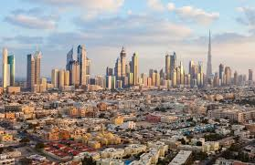
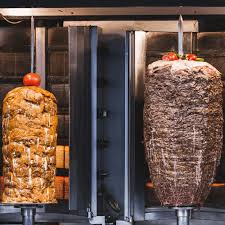
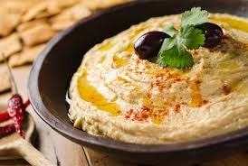
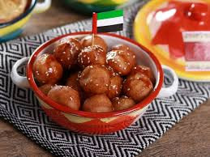
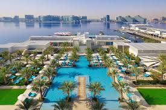
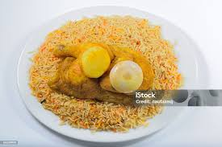
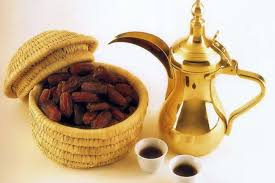

부르즈 할리파 (Burj Khalifa)

높이 828m, 163층 규모의 세계 최고층 빌딩입니다. 124층과 148층 전망대에서 도시와 페르시아만을 한눈에 조망할 수 있으며, 저녁 시간대에는 건물 아래에서 열리는 분수쇼가 주요 볼거리입니다.

아랍에미리트(UAE)는 페르시아만 남동쪽에 위치한 7개 토후국의 연합 국가입니다. 사막 위에 세워진 초현대적 도시와 전통 이슬람 문화가 공존하며, 세계 최고층 빌딩 부르즈 할리파와 황금빛 사막 사파리 등 다채로운 볼거리로 유명합니다.
아랍에미리트의 대표 관광 도시이자 글로벌 비즈니스 허브입니다. 초고층 빌딩과 인공 섬, 사막 체험이 공존하는 역동적인 도시입니다.
높이 828m, 163층 규모의 세계 최고층 빌딩입니다. 124층과 148층 전망대에서 도시와 페르시아만을 한눈에 조망할 수 있으며, 저녁 시간대에는 건물 아래에서 열리는 분수쇼가 주요 볼거리입니다.

야자수 모양으로 설계된 세계 최대 규모의 인공 섬입니다. 럭셔리 리조트와 프라이빗 비치가 밀집해 있으며, 모노레일을 이용해 섬 전체를 조망할 수 있습니다.

바삭한 카다이프 면과 초콜릿, 피스타치오를 곁들인 디저트입니다. '두바이 초콜릿'으로 널리 알려져 있으며 색다른 식감과 달콤한 맛이 특징입니다.

그릴에 구운 고기를 얇게 저며 채소, 소스와 함께 빵에 싸 먹는 중동의 대표 길거리 음식입니다. 두바이 전역의 노점에서 합리적인 가격에 즐길 수 있습니다.

4WD 차량을 이용한 사막 언덕 주행(Dune Bashing)과 낙타 체험, 전통 공연 관람이 포함된 투어입니다. 사막의 일몰과 밤하늘을 만끽할 수 있는 대표 액티비티입니다.

1,200개 이상의 매장이 입점한 세계 최대 규모의 쇼핑몰입니다. 수족관, 아이스링크 등 다양한 체험 시설이 갖추어져 있으며 야외 분수쇼 관람 거점으로도 활용됩니다.
아랍에미리트의 수도이자 정치·문화 중심지입니다. 웅장한 이슬람 건축과 예술 공간, 해안 산책로가 조화를 이루는 도시입니다.

82개의 하얀 돔과 1,000개 이상의 기둥으로 이루어진 대규모 이슬람 사원입니다. 세계 최대 크기의 수제 카펫과 화려한 샹들리에가 내부에 비치되어 있습니다.

중동 최초의 유니버설 박물관으로, 건축가 장 누벨이 설계한 거대 돔 지붕이 특징입니다. 동서양을 아우르는 수백 점의 예술 작품을 소장하고 있습니다.

병아리콩을 갈아 만든 스프레드 형식의 요리입니다. 올리브유와 함께 따뜻한 피타 빵에 곁들여 먹으며 중동 식사에서 빠지지 않는 전채 요리입니다.

튀긴 반죽에 대추야자 시럽을 뿌려 먹는 전통 간식입니다. 겉은 바삭하고 속은 부드러운 달콤한 풍미가 특징입니다.

페라리 월드, 워터월드 등 대형 테마파크가 모여 있는 엔터테인먼트 단지입니다. 세계 최고속 롤러코스터 등 스릴 넘치는 놀이시설을 운영합니다.

아부다비 해안을 따라 조성된 약 8km의 산책로입니다. 자전거 도로와 카페, 깨끗한 해변이 이어져 있어 시민들과 관광객의 휴식처로 사랑받습니다.
오만만에 접한 아랍에미리트 동부의 해안 도시입니다. 역사 유적과 산악 지형, 해양 액티비티를 함께 즐길 수 있는 지역입니다.

15세기에 건축된 UAE 최고(最古) 모스크입니다. 화려함보다는 역사적 가치와 소박한 건축미가 돋보이는 장소입니다.

약 500년 전의 역사를 지닌 요새로 산과 시내 전경을 내려다볼 수 있는 고지대에 위치해 있습니다.

향신료로 양념한 고기를 화덕에서 익혀 쌀밥 위에 올린 요리입니다. 푸자이라 해안가에서는 신선한 생선을 이용한 피쉬 만디를 맛볼 수 있습니다.

은은한 향신료 향이 특징인 아랍 커피(가흐와)와 달콤한 대추야자를 함께 즐기는 전통 환대 문화입니다. 아랍에미리트의 여유로운 일상을 체험하기 좋습니다.

스누피 아일랜드 주변의 맑은 바다에서 해양 생태계를 탐험하는 활동입니다. 다른 토후국에서는 보기 힘든 풍부한 수중 환경을 갖추고 있습니다.

산맥 사이의 건천(와디)을 따라 걷는 트레킹 활동입니다. 사막 기후에서는 이례적인 폭포와 천연 풀장 등 독특한 자연 경관을 감상할 수 있습니다.